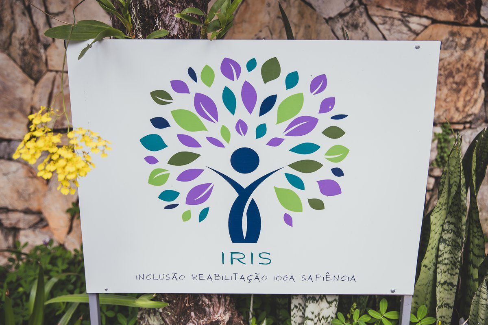

Fisioterapeuta Especialista
Especialização em Terapia Intensiva e Neuroreabilitação Pediátrica pela UNICAMP. Atendimento humanizado e baseado em evidências para crianças e adultos.
Sou fisioterapeuta com mais de 20 anos de experiência clínica, sendo 10 deles dedicados a Unidades de Terapia Intensiva (UTI), aliados à minha sólida formação acadêmica pela UNICAMP em Terapia Intensiva e Neuroreabilitação Pediátrica.
Minha prática é baseada na integração entre conhecimento científico atualizado e um olhar atento às necessidades individuais de cada paciente e família. Acredito que o cuidado genuíno começa pela escuta e pela construção de uma relação de confiança.
Condutas alinhadas ao conhecimento científico mais atual
Escuta ativa e respeito à singularidade de cada paciente
Orientação e envolvimento familiar em todo o processo
Formação permanente nas melhores metodologias
Atendimento especializado em consultório e domicílio para crianças e adultos em Sorocaba
Atendimento especializado para bebês e crianças com disfunções neurológicas ou atraso no desenvolvimento motor. Promovemos funcionalidade, autonomia e qualidade de vida.
Mais de 10 anos de experiência em UTI adulto em hospitais de Sorocaba. Reabilitação funcional precoce, manejo ventilatório e suporte em situações de alta complexidade clínica.
Formação completa no Conceito Bobath Pediátrico, abordagem internacionalmente reconhecida para crianças com comprometimentos neurológicos e síndromes diversas.
Formação de excelência nas melhores instituições do Brasil
Universidade Estadual de Campinas — UNICAMP
Especialização de alto nível em cuidados intensivos de adultos, com foco em suporte ventilatório, desmame, reabilitação em UTI e manejo de pacientes críticos. Mais de 10 anos de aplicação clínica em hospitais de Sorocaba.
Universidade Estadual de Campinas — UNICAMP
Formação especializada no tratamento fisioterapêutico de crianças com comprometimentos neurológicos, síndromes genéticas e atrasos no desenvolvimento neuromotor. Base para o atendimento na Casa IRIS.
Rede Lucy Montoro de Reabilitação / ABRADIMENE
Formação completa no Conceito Bobath, metodologia de referência internacional para reabilitação neurológica pediátrica, aplicada no tratamento de crianças com paralisia cerebral e diversas síndromes.

A Casa IRIS é uma casa antiga com um propósito novo: incluir a todos, com sabedoria, ética e prudência. No coração de Sorocaba, este espaço foi planejado para ser o oposto de uma clínica fria e impessoal — um lugar onde famílias se sentem acolhidas e seguras.
Aqui reunimos profissionais especializados em fisioterapia, comprometidos com práticas baseadas em evidências e com o desenvolvimento e reabilitação de cada paciente.
Reabilitação para bebês e crianças com disfunções neurológicas, atraso motor, Paralisia Cerebral e Síndrome de Down.
Agendar com Rogério →Atendimento especializado em reabilitação motora e respiratória para jovens e adultos, com foco na recuperação funcional e suporte ventilatório.
Agendar com Rogério →Materiais educativos práticos desenvolvidos para auxiliar no cuidado diário de bebês e crianças em casa.
Ver E-books →Entre em contato para agendar sua consulta ou tirar dúvidas. Atendo em consultório na Casa IRIS e em domicílio em Sorocaba e região.
Estou aqui para ajudar no desenvolvimento e reabilitação do paciente, ou para orientar você sobre qualquer questão de fisioterapia. Entre em contato — respondo com agilidade!
Falar pelo WhatsAppResposta rápida · Atendimento humanizado